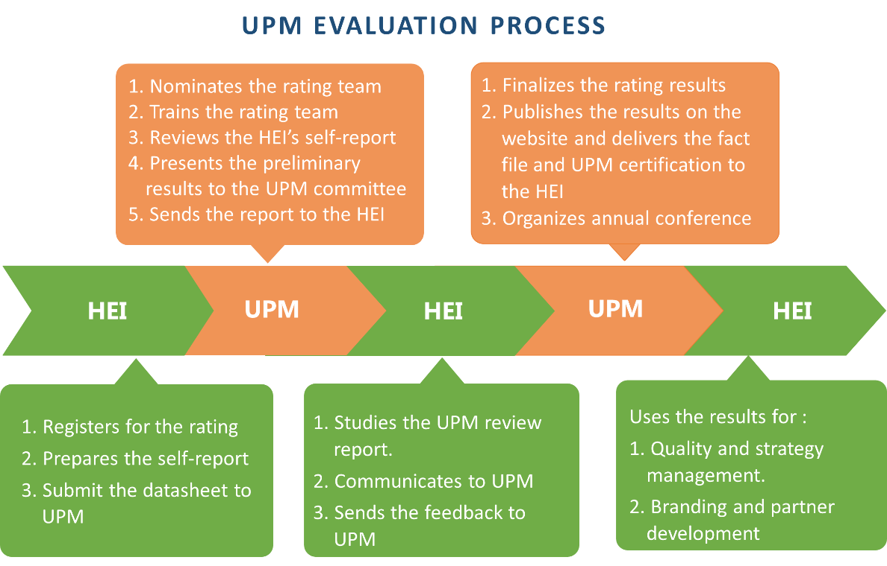

1. BACKGROUND
1.1. Higher Education Principles
Education quality is always the top priority of higher education institutions (HEIs), in which academic standards are established in order for a student to gain an academic degree or be awarded academic credit. As a principle, the university is responsible for the academic quality and standards of all degrees made in its name. At the same time, the university have to ensure that its academic standards are at least as high as those in comparable institutions, and meets external reference points such as the Frameworks and/or Global Standards for Higher Education Qualifications, where appropriate relevant subjects and key performance metrics can be benchmarked.
In addition, the contemporary tertiary education landscape worldwide is a highly competitive and open market with HEIs endeavoring to attract young talents, honorable professors, excellent researchers, and guest lecturers. The advancement of a higher education institution depends more than ever on its reputation for quality. The quality evaluation, ranking, rating and benchmarking play a part in this context, helping to shape global higher education standards and inform and assure stakeholders of the standing of institutional options.
1.2. Benchmarking, Ratings and Rankings
Benchmarking is a standard against which something can be measured. For HEIs, it is a process of measuring and comparing the performance of HEI’s activities, products or services against those of another institution or a common set of standards considered to be best in class. Benchmarking is at its best, a part of a long-term institutional development strategy.
Benchmarking is a method applied in the quality audits and assessments. It has been encouraged by many national quality management organizations in the world for HEIs to receive feedback on its activities and to learn from the good practices of other organizations; to gain new insight, to build social networks and facilitate internationalization.
In the case of comparing using a common standard, benchmarking is similar to ratings, which judge how the HEIs perform against agreed benchmarking references, rather than comparing them against one another. Rankings, however, compare HEIs to one another and place them in an order based on their performance against a range of indicators.
With rankings, only one institution can be the best, and only a set number of institutions can be included within the rankings. For example, presently the well-recognized World University Rankings can rank the top 1000 institutions across the globe only, while ratings create opportunities for all HEIs to highlight their strengths. In addition, the rating mechanisms typically look at large number of indicators and categories, which are able to evaluate almost all activities of the HEI.
1.3. Benchmarking tool for a successful 21st century university
The 21st century has posed great challenges for higher education institutions to change in order to successfully respond to new demands. A benchmarking tool that fully reflects the characteristics and requirements of the graduate, labor market and society in the new era will help universities to advance themselves on the higher education landscape of the country and the region, to work out or adjust their strategic approaches and become more effective and relevant institutions. Moreover, benchmarking metrics and indicators can provide universities with directions of improvement and act as key drivers for universities to move from a closed to a more responsive model.
UPM, as a new 21st century-oriented benchmarking process, has been developed with the following objectives in mind:
- Benchmarks universities against forward facing standards as a basis to becoming responsive across the whole university.
- A systematic method of evaluating the key processes that, if managed well, will lead to success in an institution in the 4th Industrial Revolution.
- Integrated perspective – building a unified culture and coordinated institution wide focus.
- Continuous improvement resource.
- Develop and build the institutions critical strengths and address and defend critical weaknesses.
- Performance monitoring and knowing what is most important to stakeholders.
2. UPM OVERVIEW
2.1. General information
The UNIVERSITY PERFORMANCE METRICS - UPM is a new university rating system initiated and developed by researchers from Vietnam National University, Hanoi. The project is funded by the Ministry of Education and Training of Vietnam to assess the responsiveness of the universities in the Industrial Revolution 4.0 (4IR) era and is led by Professor Nguyen Huu Duc – the former vice president of Vietnam National University, Hanoi.
The main objective of this rating system is to promote benchmarking among universities through the five core indicators: Entrepreneurial Spirit, Innovative Approaches, Digital Transformation, Student Mobility, and Ethical Values.
Performance evaluation involves 56 indicators across 8 categories, including Strategic Ambition, Education, Research, Innovation, University Ecosystem, Digital Transformation, Internationalization, and Community Services with corresponding weights (see the figure to the right).
The results will be presented in an overall score ranging from 1-5 stars and 5 stars ELITE. Institutions awarded with higher star numbers indicate exemplary reputation, the highest of which are at a competitive level of the Top 500 world universities (for 5-stars ELITE research-intensive HEIs), Top 1000 world universities (for 5-starts research-oriented HEIs) and Top 1000 Asian universities (for teaching focus HEIs).
Overall score thresholds for the overall ratings of stars are as follows:
For the 5 Stars ELITE intensive-research HEI award, however, besides the minimum score of 900 point, three (among five) pre-requisites must be met as indicated in the table. Similarly, the thresholds are defined for category and indicator ratings.
2.2. The Progress
On 18 August 2020, Vietnam National University-Hanoi (VNU) and the ASEAN University Network (AUN) jointly organized an international conference to introduce the “University Performance Metrics” (UPM).
The Minister of Education and Training (MOET) and the AUN Executive Director attended and addressed the conference. Attendees of the conference included representatives from different MOET departments, the Vietnam National Assembly and nearly 30 participating universities from Vietnam, Indonesia, Thailand and Philippines. The conference also attracted special attention from the local and national press.
Co-presenting at the conference, AUN-QA experts, Assoc. Prof. Dr. Pham Van Tuan and Assoc. Prof. Dr. Tan Kay Chuan, pointed out the significant similarities and close relationship between the criteria of AUN-QA Programme Assessment V4.0, AUN-QA Institution Assessment V2.0 and those of UPM V1.0.
On 2 March 2021, the Taiwan Ministry of Education introduced the UPM rating to Taiwan universities.
Currently, more than 50 universities from the ASEAN region (Brunei Darussalam, Myanmar, Indonesia, Philippines, Thailand, Vietnam) and Taiwan have participated, but the UPM results have been assessed for only 49 of those universities, of which non-Vietnamese universities account for a mere 42%. This was due to the COVID-19 pandemic, which limited and slowed down UPM’s database collection progress.
Despite the difficulties, there have been notes of appreciations from universities outside of Vietnam. The Presidents of Kasetsart University (Thailand), Visayas University (Philippines), Thanlyin University of Technology (Myanmar) and Telkom University (Indonesia) have expressed their satisfaction with the ratings they received by UPM and praised UPM for building a system that could help fulfill their vision of becoming a competitive university at the international level and creating a benchmark that their students and potential employers could use as indicators.
The UPM team has organized joint meetings and exchange information/experiences with the QS-star team. The UPM rating has been recognized with several advantages such as: (i) an useful benchmarking tool for the third generation university in the context of IR4.0, (ii) non-profit and (iii) adapting and supporting well the spirits and concept of AUN-QA assessment (iv) an inclusive benchmarking system for all universities.
On 15 May 2021, the UPM launched its rating system at the program level. This new rating system has already been implemented at universities in Thailand and Vietnam.
This rating system could bring significant benefits. Higher-education institutions can use it as a benchmarking tool for strategic development, as well as evidence-based branding for attracting students and potential partners. Benchmarking results can be used by students and employers as useful indicators for selecting study destinations and recruiting qualified human resources, respectively, and by national governments for future policy and decision making. In particular, UPM could provide useful information for facilitating bilateral cooperation and regional networking.
For a long term plan, the UPM rating system is going to be offered within by the UPM Institute for Innovation - a fully independent organization dedicating to research on higher education intelligence and provide consultation as requested by Vietnam regulations about ranking/rating and accreditation.
3. EVALUATION PROCESS AND PUBLICATION
The rating process can be found in the illustrated schema. The actual evaluation times will depend on the procedure HEIs require to collect and submit the essential data, as well as its response time to the requests that arise during the assessment process. Normally, the rating process would take 2-3 months.
The UPM team is always available to give support to any institutions that have queries about the methodology in their process of data collection and self-evaluation report preparation.
Universities who participate in UPM will prepare self-reported data for the institution as a whole. The data can be submitted online through the webpage created for each institution on the UPM system or the data-sheet can be sent to the UPM office via email.
All data are secured by the institution itself as well as by the UPM. After assessing and awarding the stars, UPM can publish the institution profile and the results of the overall star, as well as a score for each category on its website. The details of all indicators, however, can be published by the institution. The institution, however, can provide third parties with the details of all printed or digital data released from a UPM dataset. These publications shall be informed to UPM to evaluate the impact of the event.
This rating system could bring significant benefits to different stakeholders. Higher-education institutions can use it as a benchmarking tool for strategic development, as well as evidence-based branding for attracting students and potential partners. Benchmarking results can be used by students and employers as useful indicators for selecting study destinations and recruiting qualified human resources, respectively, and by national governments for future policy and decision making. In particular, UPM could provide useful information for facilitating bilateral cooperation and regional networking.
Should you wish to enquire about or take part in the UPM, please kindly contact the UPM Office at upm@vnu.edu.vn.
